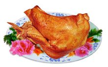
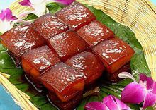

河南菜又名豫菜,历史悠久,风味独特,早在宋代,就已形成色香味俱全的宫廷风味菜肴。是中国传统美食之一。主要特点是：选料精良、讲究配菜、汤鲜香浓、色形俱佳。河南美食历史悠久口味独特，河南特色美食虽种类多样。河南特色小吃一直是来河南游客心中的那抹回不去的记忆，河南的小吃虽然不贵，但是却有着回味无穷的能量，河南特色小吃还等什么，来河南一定要来品尝这等美食哦！
合记羊肉烩面
合记羊肉烩面是一种荤、素、汤、菜、饭兼而有之的传统风味小吃，以味道鲜美，经济实惠，享誉中原。94年5月荣获“全中清真名牌风味食品”称号。97年12月又摘取“中华名小吃”桂冠。合记的前身是老乡亲饭店。1953年李少卿等4人接营，因是合伙经营，易名合记饭店。1967年起专门经营羊肉烩面，改名为“合记烩面馆”，俗称合记。 |
 |
胡辣汤
| 胡辣汤是洛阳小吃系列中的一绝。它源于宋代中叶，大兴于民国初年，之后花样不断翻新。至今你若行走在洛阳大街小巷口，随处都能见到它的身影。小小一碗胡辣汤，缘何会历久不衰呢？它以大众化的品位和低廉的价格，始终成为人们早餐时的首选。 |  |
道口烧鸡
| 豫北滑县道口镇，素有"烧鸡之乡"的称号。"义兴张"的道口烧鸡，象金华火腿、高邮鸭蛋、北京烤鸭一样，在全国食品中独占鳌头，并且誉满神州，名扬海外。 道口烧鸡具有五味佳、酥香软烂、咸淡适口、肥而不腻的特点。食用不需要刀切，用手一抖，骨肉即自行分离，无论凉热、食之均余香满口。 道口烧鸡是河南滑县道口镇“义兴张”烧鸡店所制，是该省著名的特产。创业于清朝顺治十八年（1616年），至今已有三百多年的历史，开始制作不得法，生意并不兴隆，后从清宫御膳房的御厨那里求得制作烧鸡秘方，做出的鸡果然香美。道口烧鸡的制作技艺历代相传，形成自己的独特风格。 |  |
清汤东坡肉
| 清汤东坡肉是古城开封的名菜之一。它的制作方法是：把猪肉煮到八成熟，片去外皮的二分之一，切成长方块，与冬笋片、冬菇片一起摆入蒸碗内，放入盐水、原油、料酒等佐料，上笼蒸烂后翻入碗内，除去浮油，兑入适量的清汤即成。其特点是：汤鲜肉烂，清醇利口，肥而不腻。 |  |
长寿鱼
| 是以黄河鲤鱼为原料的一道名菜，河南省的黄河鲤鱼以肉质鲜嫩而驰名。长寿鱼即是由黄河鲤鱼加上枸杞子共同烹制而成，咸、甜、酸三味俱全，色泽红亮，极具药用价值。相传，长寿鱼的来历和东汉光武帝还有一定的关系。一年春天，刘秀来到位于黄河之滨的邙山。这里山青水绿，景色秀丽，刘秀正看得入神之际，突然有一条金色鲤鱼跃出水面，只见这条鱼通体泛红，在阳光下甚是抢眼。刘秀吃了用这条鱼做成的长寿鱼后，感到精神为之一振，劳累之感顿消。后来，长寿鱼的做法渐渐流入民间，成为洛阳的一道名菜。 |  |
桶子鸡
| 是开封特产名菜，源于清朝咸丰年间，至今已有100多年的历史。由于当时煮鸡的锅用的是下铁上木的桶形锅，所以得名为桶子鸡。它选用生长期不超过三年的优质肥嫩活母鸡，采用百年老卤汤煨制而成。具有色泽金黄，肥而不腻，鲜嫩脆香，味道醇美的特点。位于鼓楼广场南侧的马豫兴鸡鸭店的“桶子鸡”尤为有名。 |  |